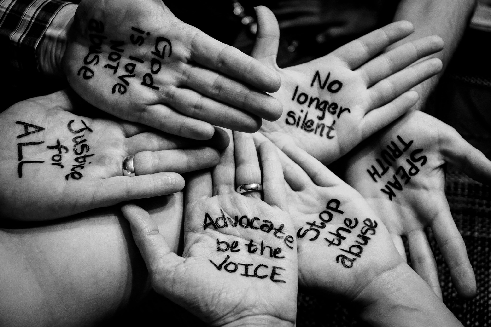
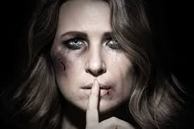
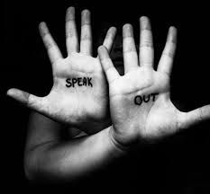
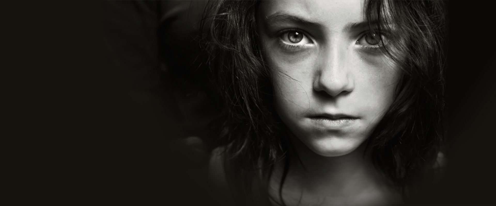

   
Abuse is the improper usage or treatment of an entity, often for an improper gain benefit. Abuse can come in many different forms, such as: physical, psychological or verbal maltreatment, injury, assault, violation, rape, unjust practices, crimes, or other types of aggression.
Police Abuse
Police brutality is the intentional excessive abuse by a police officer. Police misconduct refers to inappropriate actions taken by police officers in connection with their official duties. Police misconduct can lead to a miscarriage of justice and sometimes involves discrimination.
Here are some steps you can take:
Do understand what constitutes police misconduct Danger: Police can violate the rights of the citizens they encounter. Police officers have inherent authority, and officers who abuse this authority can cause great damage to the victims. Which va lead to false arrests, improper searches, forced confessions, harassment, police brutality and false imprisonment. Some misconduct is intentional while other misconduct is a result of negligent, sloppy, and lazy police work. No matter what type of misconduct suffered, a victim should consult with an attorney in order to discuss any necessary criminal defense or potential civil lawsuit.
Do know your options for reporting police misconduct
There are a few ways police victims can voice their grievances and indignation. Some police departments have civil complaint departments that record and investigate civilian complaints against the police.Another option for victims is to report the incident to the Internal Affairs division of the police department. However, these options lack the potential for awarding the victim damages or compensation.(Only by starting a lawsuit will a victim be able to hold the offending officer accountable while simultaneously seeking monetary compensation)
Do write down the details!
In any police misconduct lawsuit, the burden will be on the victim to prove the improper police actions. To that end, a victim should record the officer’s name, precinct, badge/shield number, patrol car number and any other information that could help identify the involved police officer. To have a better understanding of the information WRITE it down as soon as posible.
Do take pictures and track down video footage
Pictures and videos are one of the best means of conveying to a jury the injuries suffered as a result of police misconduct and brutality. Victims should try and track down all footage in order to strengthen the proofs in their case.
Do understand your goals
Each victim has a unique path to recovery from police misconduct. Some victims seek an apology while others want actions to be taken against the offending officer.Victims need to think about their goals before taking an action.A lawsuits will demand monetary compensation but may not ensure any direct consequences to the offending officer. Apologies are even harder to obtain. Therefore, victims should consult with an attorney and make sure any civil or disciplinary actions taken are in line with the victim’s personal goals and recovery process
. https://expertbeacon.com/what-do-if-youre-victim-police-misconduct#.WW-hUoTyvIUPhysical Abuse
What is Physical abuse?
Physical abuse is the intentional act of injury to another person through contact. Physical abuse can also include sexual abuse, and can include more than one abuserand more than one victim.
Domestic abuse is one type of physical abuse, it is important to know that the law is on your side. There are certain stepsyou can take against domestic abuse, wih Domestict Violence Act 116 government created obligations on police to protect domestic abuse victims, here are some prcedures you can take:
Open a criminal case
First step you can take is to open a criminal case aginst your abuser, police shall arrest abuser and be put on trial.
Apply for protection
With the protection order will put abuser's abuse to a stop.
Report the abuse
If the abuse continues go to the cops and report your abuse. An officer on duty should open a case of contempt of court. Abuser will be arrested for their crime and may face 5 years in jail.
Seek advice
Physycal abuse is not just a matter of courts. It also has an physical effect, there are certain organizations that can be of help, such as Lifeline or People Opposing Women Abuse. Before you take action, speak to lawyers, counsellors, and sympathetic family members to ensure that you take action in a way that does not leave you open to more abuse from an angered partner.
http://www.w24.co.za/Work/Legal/How-to-legally-protect-yourself-against-domestic-abuse-20130807Psychological abuse
Psychological abuse is defined as mental abuse performed to the victim,by subjecting to psychological harm.There are three main types of Psychological abuse and abuser uses: Verbal aggression, Dominant behaviors or Jealous behaviors.
Identify psychological abuse
One main sign of mental abuse is the feeling that something is "wrong", and with further assess those feelings you can identify whether there is a connection with mental abuse or not.
How to cope with Emotional abuse
Understand the abuser is a step to coping with abuse, because you are not the problem it is them.
Stand up to the abuser, find a positive way to interact with abuser,change into a more light subject to distract from the situation.
How to stop emotional abuse
It's up to the victim and those around them to stop an abuser to regain control of the situation, speak in a calm clear voice, act out rationally and being more assertive.
Stop severe emotional abuse
To stop severe emotional abuse: Remember you are not alone and that the abuse is not your fault Call a help-line:
http://www.healthyplace.com/other-info/resources/mental-health-hotline-numbers-and-referral-resourcesGo to Womanslaw.org to find state and national help:
http://www.womenslaw.org/gethelp.phpContact a child and family welfare agency:
http://www.acf.hhs.gov/programs/cse/extinf.htmlTalk to your doctor or other health professional
https://www.healthyplace.com/abuse/emotional-psychological-abuse/dealing-with-emotional-abuse-how-to-stop-emotional-abuse/